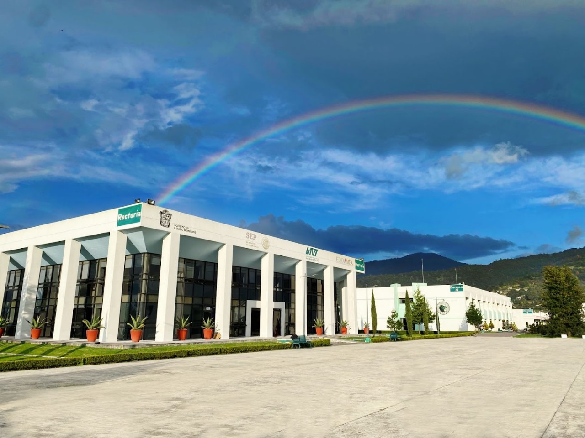

Somos una empresa Startup, que busca avanzar e innovar en la parte tecnológica,
utilizando todo lo que tenemos en nuestras manos.
Todo comenzó conforme a un proyecto integrador en el que
se necesitaba crear una necesidad cotidiana, este proyecto surgió en la UTVT Fue hecho por tres integrantes:
de ahí proviene el en el nombre.

Nos ubicamos cerca de la iglesia principal del barrio .
Av Reforma 113, Buenavista, 52105 San Mateo Atenco, Méx.